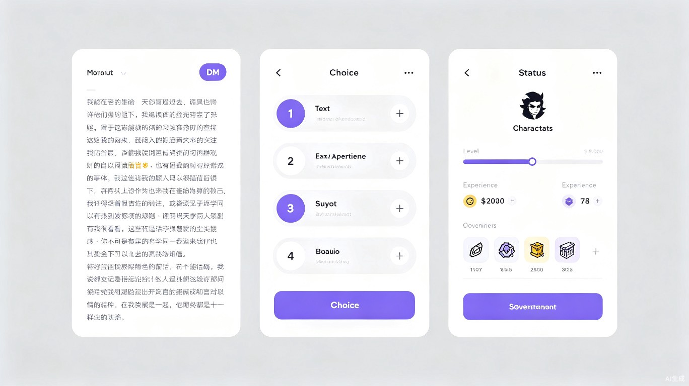

01创意介绍
把"阅读"变成"在文字里冒险"
想解决什么问题
学生觉得课本枯燥读不进去；亚文化爱好者想在喜爱小说的世界观里"活一次"却只能靠脑补；浩如烟海的古籍经典因文言文隔阂被当代年轻人束之高阁。三类人中间缺一个共同的东西——能把"任意一篇文章、任意一部古籍"自动变成"可玩世界"的通用引擎。
为什么会想到做这个
灵感来自三个场景的碰撞——学生背《从百草园到三味书屋》只记得"碧绿的菜畦、光滑的石井栏"几个名词却毫无画面感；《诡秘之主》粉丝想体验"喝下魔药、序列晋升"只能靠文字脑补；翻开《山海经》满纸"又东三百里，曰堂庭之山，多棪木，多白猿"，每个字都认识却想象不出那是怎样的世界。
我意识到课文、网文、古籍，本质上都是"世界设定"，只是缺一个把它们变成游戏的引擎。如果 AI 能把任意文本拆解成地点、角色、物品、升级路线，再搭出可探索的开放世界，"阅读"就变成了"在文字里冒险"。
产品形态
一个 Web 应用。玩家在输入框填入文章名或古籍名（如"诡秘之主""百草园到三味书屋""山海经""史记·项羽本纪"），后端 AI 在十几秒内把文本拆解成结构化世界数据——地点列表、可选身份、关键物品、从底到顶的升级路线、起始场景。玩家在文字世界里选身份、探索场景、遭遇事件、逐级升级，AI 实时当"游戏主持人（DM）"叙述剧情、判定行动结果。
小文章生成小世界（线性历险），大文章构建大世界观——如《山海经》可成为自由探索的开放世界，扮演远古猎手在山系间游走、遭遇异兽、集齐图鉴。任意一篇文章、任意一部古籍，都能玩。
02玩法流程
从输入文章名到在文字世界冒险，只需四步
输入文章名
玩家在输入框填入任意文章名或古籍名，如"诡秘之主""山海经"
AI 拆解世界
后端 AI 在十几秒内提取地点、角色、物品、升级路线，生成结构化世界数据
选择身份进入
玩家从 AI 生成的多个身份中选择一个（如占卜师学徒、远古猎手），获得初始属性
文字历险升级
AI 实时当 DM 叙述剧情、给出选项、判定检定，玩家探索场景、获得物品、逐级升级到达顶端

03目标用户及痛点
三类用户，一个共同缺口
在校学生
13-25 岁，初中到大学，需要在课外用有趣方式消化课本内容
亚文化爱好者
网文、轻小说、克苏鲁等圈层，热衷在喜爱小说世界观中沉浸体验
传统文化爱好者
对中国传统文化感兴趣，但被文言文门槛劝退的年轻人
使用场景
当前痛点
- 教育产品枯燥：以刷题、知识点罗列为主，学生缺乏主动探索欲，读完《百草园》只记得几个名词
- 同人游戏无法通用：亚文化社区同人游戏为单一作品手工定制，玩家没法在任意小说里冒险，新作需等数月开发
- 古籍接触渠道有限：学校文言文教学偏字词翻译，缺乏整体世界建构；"国学"App 多为诵读打卡，体验感弱
- 影视改编覆盖极窄：只覆盖《三国》《西游》等少数热门 IP，绝大多数古籍无人问津
古籍和现代人之间，缺的不是内容，而是一个"让人愿意走进去"的入口。
04价值与意义
从文化传承到效率革命
社会价值 文化传承与教育公平
用游戏化方式降低文学阅读门槛，让古籍从"故纸堆"变成"可探索的开放世界"。学生在《百草园》里历险一遍自然记住场景因果；一个年轻人打开《山海经》扮演远行者在群山间遭遇异兽——他记住的不再是干瘪的"又东三百里"，而是活生生的神话地理。冷门古籍无需等待影视改编就能即时获得"可被走进"的形态；哪怕没有资源、没有文言功底的人，也能用最低成本"玩懂"一部经典。
社会公益价值 古籍活化
本项目天然契合社会公益方向。中华传世古籍数以万计，被大众熟知的不到百部，绝大多数沉睡在图书馆与数据库里。本项目提供零成本的活化路径——任意一部公有领域古籍，输入名字即可生成可玩的开放世界，无需开发、无需改编、无需运营投入。一部冷门方志、一段失传神话、一卷医典本草，都能在几分钟内"活过来"。这种"古籍即世界"的普惠模式能显著扩大传统文化的大众触达面，尤其惠及教育资源薄弱地区的学生与文化爱好者。
效率提升 内容供给革命
传统开发一款基于特定文本的文字冒险游戏需要数月人工设计剧情分支、道具、结局；本项目用 AI 在数十秒内完成世界构建，将"文本→可玩游戏"的转化成本压缩到接近零。任何一篇文章——从一篇课文到一部长篇网文，再到一部卷帙浩繁的古籍——都能即时游戏化，内容供给从"少数作品被手工开发"变成"任意作品可自动生成"，彻底打破内容产出的瓶颈。
05技术架构
混合模式：世界骨架固定 + AI 实时当 DM
AI 角色 — 混合模式
世界骨架（地点/身份/物品/升级路线/起始场景）一次性生成并固定，保证一致性；剧情对话、遭遇事件、NPC 互动由 AI 实时当 DM 生成，保证生动性。平衡了可控性与沉浸感。